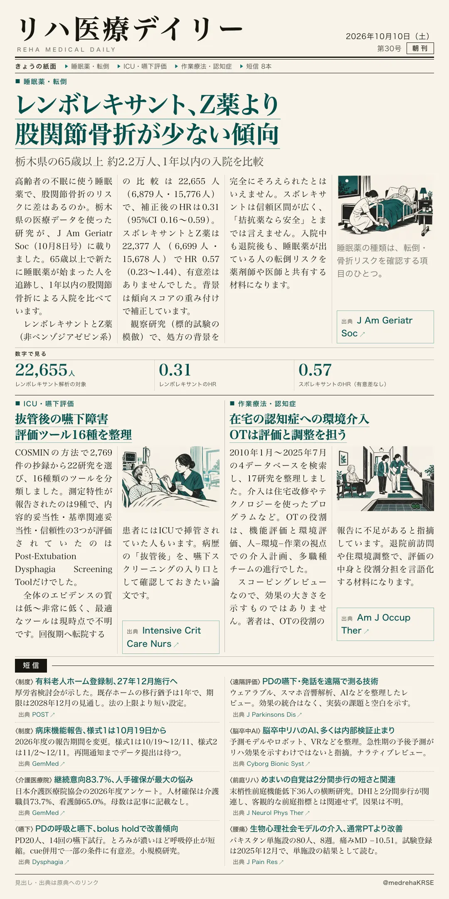
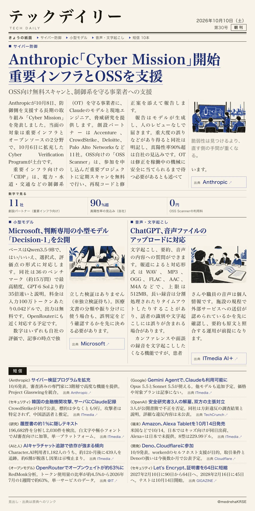

リハ医療デイリー
レンボレキサント、Z薬より 股関節骨折が少ない傾向
栃木県の65歳以上 約2.2万人、1年以内の入院を比較
高齢者の不眠に使う睡眠薬で、股関節骨折のリスクに差はあるのか。栃木県の医療データを使った研究が出ました。

テックデイリー
Anthropic「Cyber Mission」開始 重要インフラとOSSを支援
OSS向け無料スキャンと、制御系を守る事業者への支援
Anthropicが10月8日、防御側を支援する長期の取り組みを発表しました。当面の対象は重要インフラとオープンソースです。
